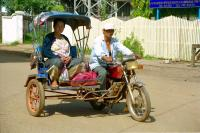
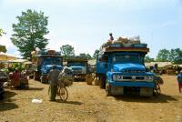
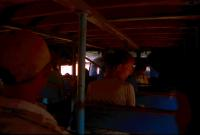
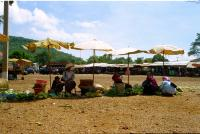
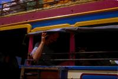
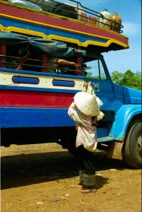

|
Samedi 2 juin
Après quelques rapides formalités (5 minutes, on a même faiili passer sans
se faire tamponner la sortie de Thaïlande ni l'entrée au Laos tant c'était bien
indiqué et que tout le monde semblait s'en fiche royalement), nous voilà au
Laos avec un visa de trente jours. Depuis le temps qu'on le regardait depuis
l'autre côté du Mékong! Tout de suite, camionnette de 14 places où on s'entasse
à 30 plus d'innombrables sacs de 10 kg de fruits. Mais chut, faut pas le dire,
c'est de la contrebande. Pendant le trajet, la douane nous arrête et vérifie
le tout. Du coup, Lionel se retrouve avec 10 kg de fruits sur les genoux, pour
tromper les douaniers! Comme s'ils allaient gober ça... Hé bien oui, et aussi
ils ne "voient" pas les kilos de fruits "cachés" sous les banquettes... et qui
seront sûrement revendus à prix d'or à Paksé.
La campagne ressemble fort à ce qu'on vient de quitter en Thaïlande, l'Isan
(prononcer issane, plus sec que le reste du pays) et c'est bien normal vu que
c'est tout près. Paksé a l'air d'une ville qui sort d'un bombardement: rues
défoncées non goudronnées, trottoirs troués au-dessus des égoûts (super dangereux
la nuit), bref, une ville qui se construit. Le Laos a l'air beaucoup beaucoup
plus pauvre que la Thaïlande. A suivre...
On a fait du change. Il va falloir s'acheter une valise. En Thaïlande, 1FF=6
baths. Ici, 1Bath=190 Kips. On a changé 3000 baths, ça nous fait 570000 kips!
En billets de 2000 et 5000 kips. Ca. c'est Lionel qui le garde. Moi j'ai une
petite bourse en tissu où je garde le budget du jour, l'équivalent de 100FF.
C'en est trop, j'ai plus d'un centimètre d'épaisseur de billets, elle explose!
110000 kips.
Que va-t-on manger ici? Après le riz-lentilles de l'Inde, le riz-poulet de
la Thaïlande, on parie sur du riz-quelque chose pour le Laos. Depuis notre départ,
il nous semble que c;est en Inde que nous avons mangé le plus équilibré, épinards,
lentilles, riz et nombreux légumes et fruits, le tout arrosé très abondamment
de thé noir ou de tchaé.
Dimanche 3 juin
"Sabaïdi" comme on dit ici! Qu'est-ce que ça veut dire? Un indice, ça se prononce
"savadi"! Ca vaut dire bonjour tout simplement. Ce matin, on veut descendre
à Si Phan Don au sud. On l'appelle aussi les 4000 îles et ça se situe au nord
du Cambodge, dans les 50 derniers kilomètres laotien du Mékong. Le Mékong à
cet endroit atteint jusqu'à 14 km de large, ce qui est sa plus grande largeur
depuis sa source sur le plateau tibétain jusqu'à la mer de Chine. Ca a l'air
chouette, toutes ces petites îles mais il faut d'abord réussir à y aller. On
tente le bâteau. Hier, on n'a pas trouvé l'embarcadère, on aura sans doute plus
de chance aujourd'hui. En plus, on ne sait pas dy tout à quelle heure il y en
a, les avis divergent. D'un côté "8h00, 9h00 et 11h00 pour 30000 kips", de l'autre
côté "10h00" et ce matin on nous dit "entre 7 et 8h00"! Trop tard, il,est 8h30.
De toute façon, on a beau marcher dans tous les sens, on n'a jamais trouvé ce
fichu embarcadère malgré les nombreux allers et retours que nous ont fait faire
les laotiens. Il n'y en a pas un qui parle ou comprenne l'anglais et avec notre
accent de chiotte, quand on dit "Si Phan Don", on dirait qu'on leur parle...
français!!! On a donc erré au milieu du marché très très animé par les cris
des cochons qui ne veulent pas changer de proprio, par les gans qui papotent,
vendent et achètent la marchandise étalée sur la terre battue sous les parasols.
Bref, on se décide pour le bus. On monte dans un touk-touk. Le papie a l'air
de comprendre, il répète "Si Phan Don-bus" plusieurs fois et... nous largue
à un arrêt à 2 km de là, pas du tout le bon. On le soupçonne de s'être joué
de nous, trop tard, il est parti. On trouve une moto-touk-touk qui nous emmène
500 mètres plus loin. On se renseigne avant de le laisser filer. Ce n'est toujours
pas là... Notre arrêt est à 8 km en dehors de la ville et il ne veut pas y aller,
peur que sa moto rende l'âme (et ça semble plus que probable vu le mal qu'on
a eu à faire 500 mètres). Alors on part à travers l'indescriptible bordel (dit
poliment): marché, touk-touks, camions-bus, motos, poules, vaches, cochons...etc
etc etc... et, 2 bus (c'est tout de même l'arrêt des bus). Le tout posé dans
tous les sens. On rêve un instant, mais non ce n'est pas pour nous. Pendant
1/2 heure, cherche un touk-touk public mais on ne trouve pas et on a du mal
à se faire comprendre. Par contre on comprend très bien l'homme qui veut nous
vendre les hamacs! On loue donc un touk-touk et c'est reparti pour le terminal
8. On arrive sur un grand terre-plein avec plein de camions-bus en bois, le
marché, les vaches.
Un camion-bus prêt à craquer va partir à Si Phan Don. Celui d'à côté est moins
chargé et son rabatteur-conducteur nous dit qu'il y va. Notre touk-touk nous
dit que non, mais on sait d'expérience ce que vaut la parole d'un touk-touk!
Et il a l'air bien moins rempli, dans l'autre, les gens sont assis dehors! On
le choisit. Surprise! Le sol est recouvert d'énormes sacs de riz, partout! On
va voyager les genoux dans le menton. Pendant qu'on s'installe, une dame veut
nous vendre des sandwiches au paté et une autre des crickets en brochette. On
se décide pour... le paté... qui s'avère infect. Trois heures plus tard, pendant
lesquelles Lionel a bien regretté ses "kilos protecteurs des fesses" perdus,
on arrive. On traverse le bras du Mékong en pirogue pour arriver sur l'île de
Don Khong. Là, un superbe hôtel en teck nous tend les bras, planté au milieu
d'un très chouette jardin où une fille tond l'herbe... au sécateur!!!
Suite du voyage : Si Phan Don
|

Laos
Pakse
|

Laos
Pakse
|

Laos
Don Khong
|

Laos
Don Khong
|

Laos
Don Khong
|

Laos
Don Khong
|
|
|